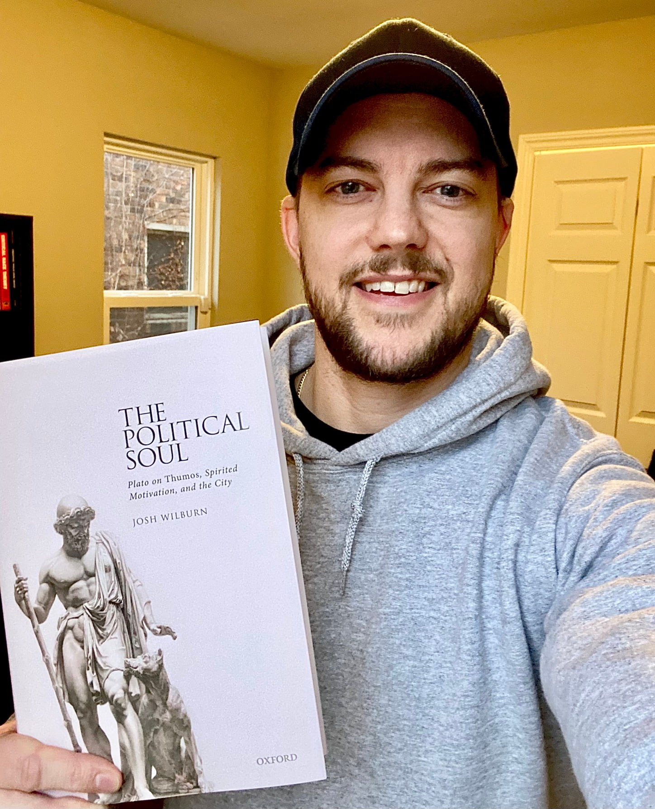

The Political Soul: Plato on Thumos, Spirited Motivation, and the City
By Dr. Josh Wilburn, Wayne State University
This book examines the relationship between Plato's views on psychology and his political philosophy, focusing on his reflections on the spirited part of the tripartite soul, or thumos, and spirited motivation over the course of his career. Spirit is the distinctively social or political part of the human soul for Plato, in the sense that it is the source of the desires, emotions, and sensitivities that make it possible for people to form relationships with one another, interact politically, and cooperate together in and protect their communities. Such emotions prominently include not only the aggressive or competitive qualities for which thumos is well known, but also the feelings of attachment, love, friendship, and civic fellowship that bind families andcommunities together and make cities possible in the first place. Moreover, as spirit is the political part of the soul in this sense, two social and political challenges that occupy Plato throughout his works—namely, how to educate citizens properly in virtue and how to maintain unity and stability in political communities—cannot be addressed and resolved, on his view, without proper attention to the spirited aspects of human psychology.